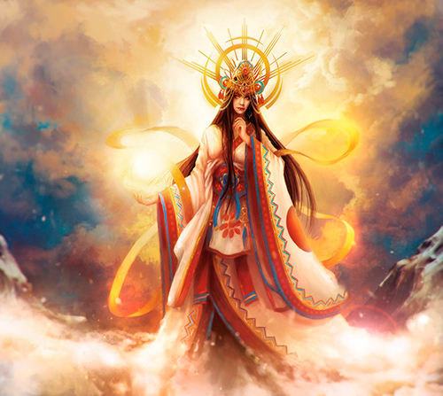

Galería de imágenes
Dioses Japoneses
Amaterasu, Diosa japonesa del sol.
Tsukuyomi, Dios de la luna.
Hachiman, Dios de los guerreros samurai.
Inari, Dios de la agricultura y la fertilidad.

Kagutsuchi, Dios del fuego.
O-Wa-Tsu-Mi, Dios dragón que domina los mares y sus especies habitantes.
Shinigami, Dios de la muerte.
Susanoo, Dios del mar y las tormentas.

Ukemochi, Diosa de los alimentos esenciales.